6.6 漢字の区点位置の解釈
6.6.1 区点位置と字体との対応 漢字の区点位置の図形文字と一般に用いられている漢字の字体との対応は，その区点位置の例示字体並びに6.6.3及び6.6.4によって定める。
6.6.3及び6.6.4で規定する包摂規準は，一般に用いられている漢字の字体とこの規格でそのビット組合せを規定する図形文字との対応を示すためにだけ用いるのであって，漢字の字体そのものに対しては，いかなる基準を与えるものでもない。
また，ここで規定する包摂規準を部分字体として演繹的に用いることによって，新たな漢字字体を作り上げてはならない。
備考1. 例示字体及び包摂規準は，明朝体によって示す。これは，他の書体の利用を制限するものではなく，また書体にいかなる基準を与えるものでもない。
2. 例示字体は，この規格の区点位置を実現した一つの例であり，その字体を推奨するものではない。
6.6.2 字体の実現としての字形 この規格は，字体の図形的実現としての字形については規定しない。
一つの字体の図形的実現としては，デザインの差に基づく複数の字形が考えられるが，この規格はそれらを互いに区別しない。
例 一つの字体の明朝体の字形デザインの差は，この規格では区別しない。次に，常用漢字表(昭和56.10.1,内閣告示第1号)の“(付)字体についての解説 第1 明朝体活字のデザインについて”から，字形デザインの差の例を引用する。
a) へんとつくりなどの組合せ方について
1) 大小，高低などに関する例
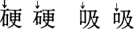
2) はなれているか，接触しているかに関する例
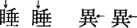
b) 点画の組合せ方について
1) 長短に関する例
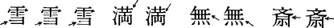
2) つけるか，はなすかに関する例
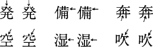
3) 接触の位置に関する例
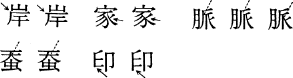
4) 交わるか，交わらないかに関する例
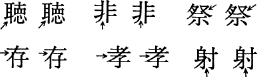
5) その他
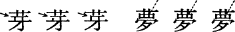
C) 点画の性質について
1) 点か，棒(画)かに関する例
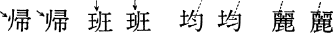
2) 傾斜，方向に関する例
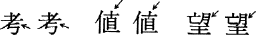
3) 曲げ方，折り方に関する例
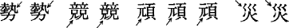
4) “筆押さえ”などの有無に関する例
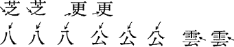
5) とめるか，はらうかに関する例
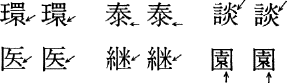
6) とめるか，ぬくかに関する例
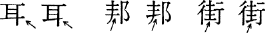
7) はねるか，とめるかに関する例
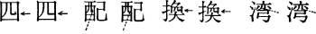
常用漢字表“(付)字体についての解説 第2 明朝体活字と筆写の楷書との関係について”で，明朝体活字と筆写の楷(かい)書における書き方の習慣の相違に基づく表現の差として取り上げられたものの中で，実際の明朝体活字の字形デザインの差としても見られることがあるものには，次のような例がある。
言，音，意など
陸，睦，藝など
なお，常用漢字表がデザイン差とするものでも，この規格では，明確化のために包摂規準とすることがある。
目次にもどる。